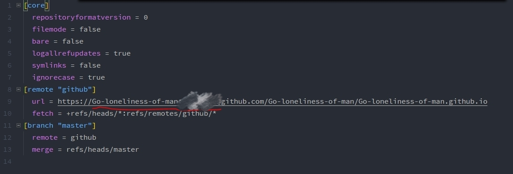

1.git commit提交时要写注释，可以这样解决：
git commit -m "注释"
2.git push时提示Logon failed......字样，并让你在命令行界面重新键入用户名密码
是因为第一次输错了密码。crtl+c退出，重新push。
3.git push时提示everything up-to-date
有三种情况:未add、未commit、远程仓库没有分支.
4.git push时提示“失败”且让你在命令行重新键入用户名和密码
在本地git仓库文件夹下搜索config文件(不搜索是看不到的)，打开后修改url选项:在http://后加上这个格式“用户名:密码@”即可，如下图:

这样就可以正常push了。
5.push到github时出现问题，提示could not resolve host:github.com
是因为github.com没有被主机给解析，解决办法:
直接修改/etc/hosts文件，windows系统应该也一样，直接修改 C:\Windows\System32\drivers\etc\host 文件即可，在底部添加 :
192.30.253.112 github.com